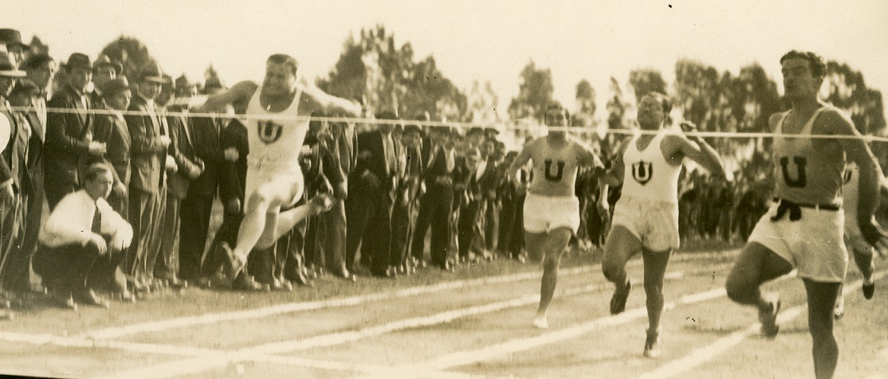

Más de 100 años de historias
Nuestro objetivo es preservar y difundir la historia deportiva, social y cultural del club, destacando los logros, figuras y valores que hacen grande a nuestra institución. El museo busca conectar a la comunidad con la memoria deportiva y ayuda a construir la identidad y fomentar el orgullo de pertenencia entre los socios y simpatizantes.
Leer más